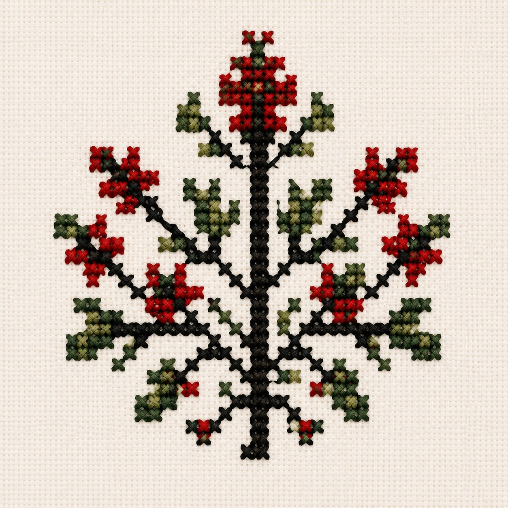
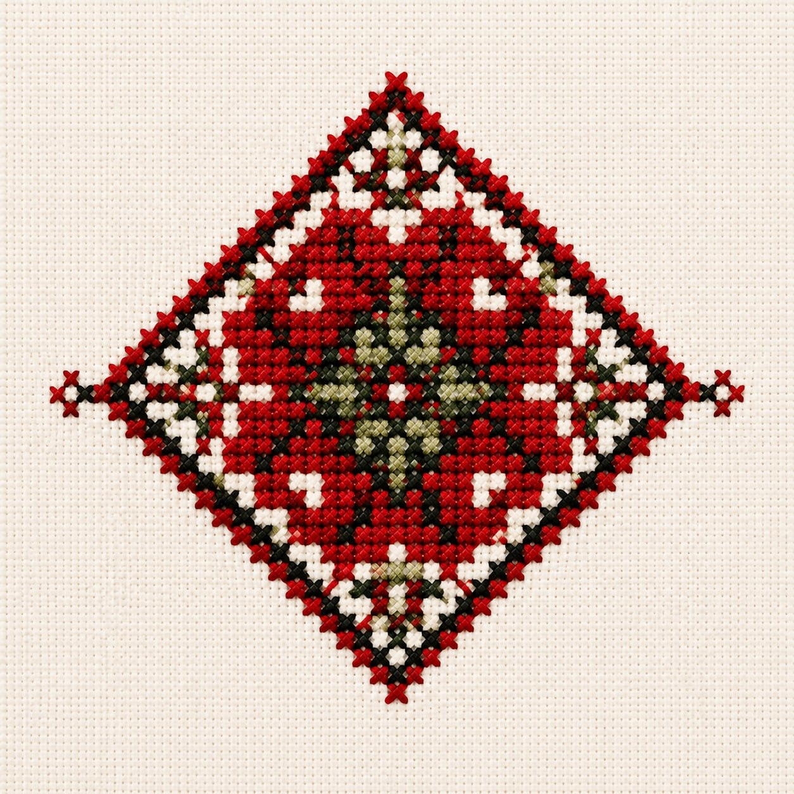
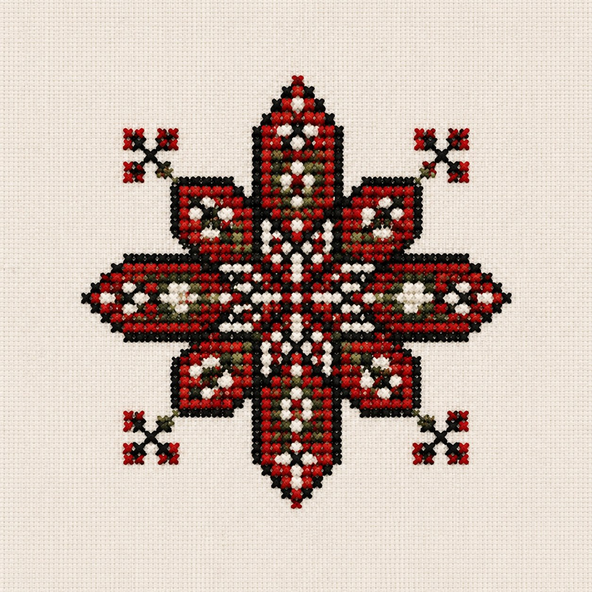
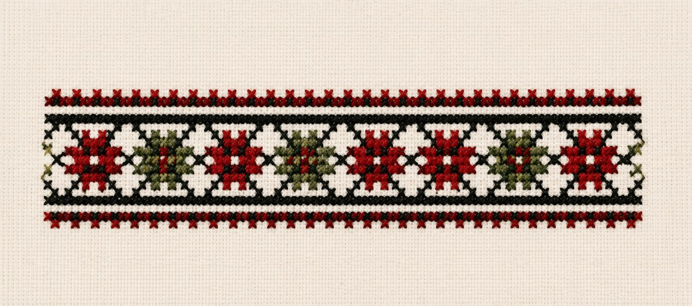
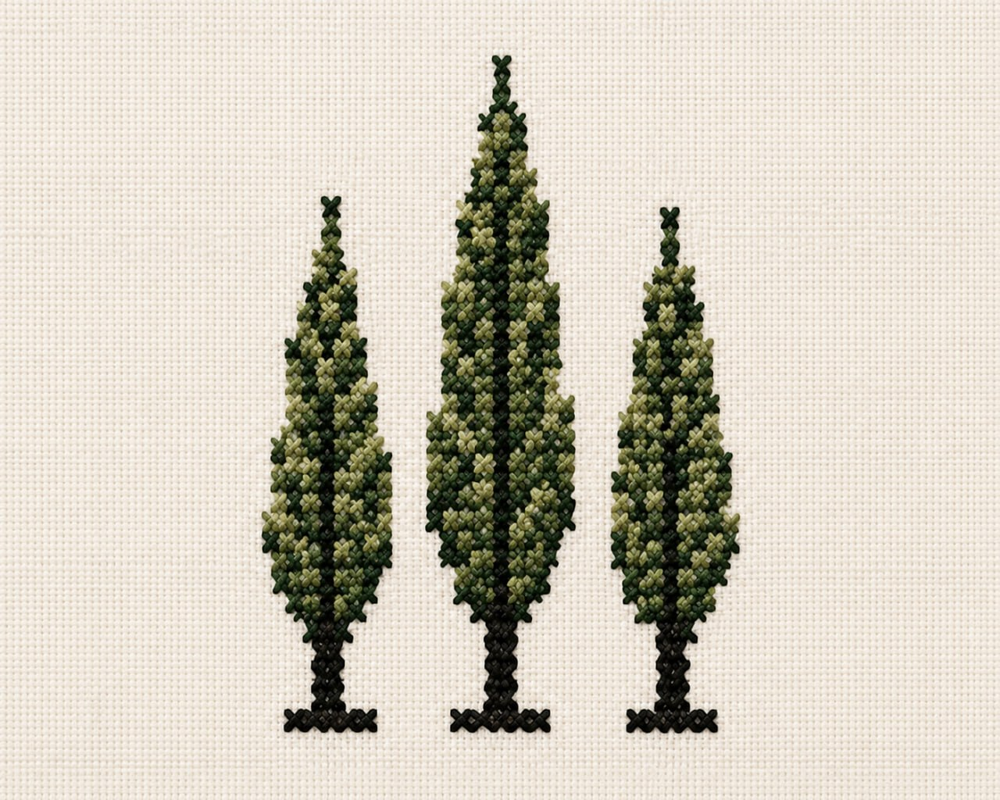
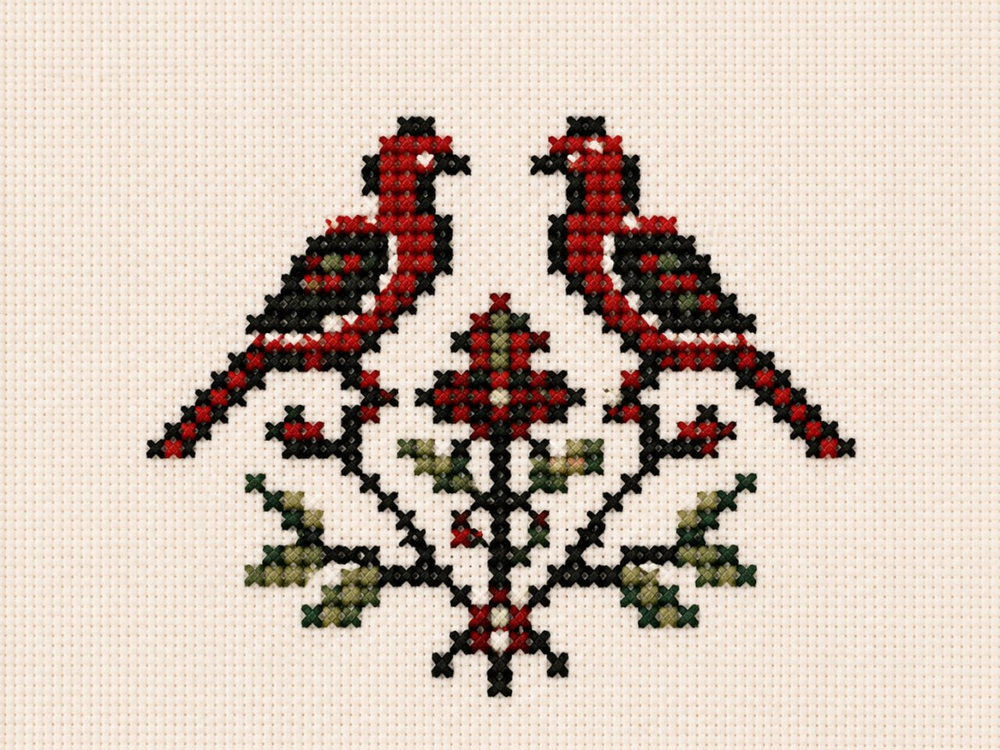

غرز من تراثنا
كل رمز يحمل معنى وهوية، ويروي حكاية.
في كل غرزة حكاية، وفي كل رمز معنى متجذر في أرضنا وتراثنا.
اكتشف الرموز التقليدية لتطريز رام الله ومعانيها العميقة:

غصن الزيتون
يرمز إلى السلام والصمود والبركة، وشجرة الزيتون رمز الجذور والاستمرار.

شكل الماسة
يرمز إلى القوة والحماية والاتزان، ويبعد الحسد ويمنح الثبات.

نجمة رام الله
ترمز إلى النور والهداية والجمال، وتعبر عن التوازن والهوية.

شريط الزهور
يرمز إلى الحياة والفرح والتجدد، ويعبر عن فتح الطبيعة واستمرارها.

أشجار السرو
ترمز إلى الشموخ والصمود والخلود، وترتبط بالكرامة والثبات.

العصافير
ترمز إلى الحرية والمحبة والسلام، وتعبر عن الوفاق والترابط.